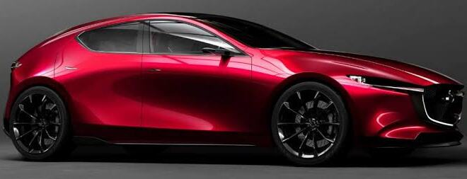

Mazda 2
Automóvil compacto utilizado principalmente en la ciudad.
Conoce más sobre la marca Mazda.
Mazda es una empresa japonesa dedicada a la fabricación de vehículos.
La compañía fue fundada en 1920 y es reconocida por sus automóviles y vehículos SUV.

La marca cuenta con diferentes modelos de vehículos.
Automóvil compacto utilizado principalmente en la ciudad.
Automóvil que combina diseño, comodidad y tecnología.
Vehículo SUV con espacio para pasajeros y equipaje.
La siguiente tabla presenta algunos modelos de la marca.
| Modelo | Tipo | Uso principal |
|---|---|---|
| Mazda 2 | Automóvil | Ciudad |
| Mazda 3 | Automóvil | Ciudad y carretera |
| Mazda CX-5 | SUV | Viajes familiares |
Los vehículos Mazda son conocidos por su diseño y tecnología.
Puedes conocer las otras marcas utilizando el menú de navegación.